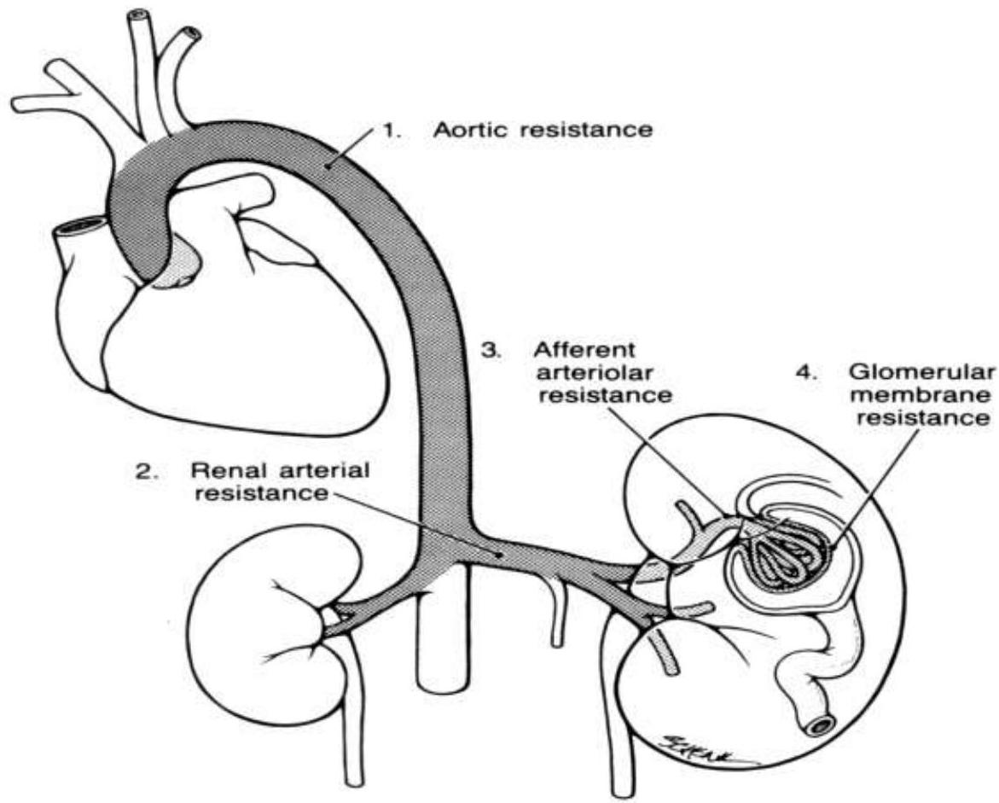

🩺
Topic 01
Physiology & Assessment
01
Renal Blood Flow
Cardiac Output: The kidneys receive a significant portion of cardiac output to perform filtration functions.

Fig. 1.1: Overview of the Renal System Structure
02
Normal Physiology
Urine Formation
Urine formation begins with plasma passing across the wall of glomerular capillaries.
The Glomerular Filtration
- Balance of pressures: It relies on the balance of pressure acting across the capillary wall (glomerular hydrostatic pressure vs. Bowman’s space oncotic pressure). This forces filtration of fluid across the capillary wall.
- Flow Rate: The rate is normal when the plasma flows through the glomeruli.
- Permeability: Dependent on the permeability and total surface area of filtration capillaries.
Reduced Glomerular Filtrate
Reduced filtration occurs when:
- Glomerular hydrostatic pressure reduces (e.g., in hypotension).
- Bowman’s space hydrostatic pressure increases (e.g., in ureteric or bladder neck obstruction).
- Plasma oncotic pressure increases (e.g., in haemoconcentration due to dehydration, multiple myeloma, or other dysproteineamia).
- Renal blood and plasma flow decrease (e.g., in circulatory collapse).
- Permeability or total filtering surface area reduces (e.g., in acute or chronic glomerulonephritis).
03
Functions of the Kidney
Core Renal Functions
- Responsible for regulation of water (isoosmotic pressure).
- Regulation of Vasopressin which helps in sodium chloride and urea excretion.
- Responsible for regulation of electrolytes.
- Maintenance of normal acid-base balance of body fluids.
- Retention of vital substances within the body (i.e., proteins).
- Excretion of metabolic products and toxic substances (especially drugs).
- Responsible for hormonal and metabolic functions (Renin-angiotensin-aldosterone, erythropoietin, and prostaglandins).
04
Signs and Symptoms
Symptoms frequently arise from abnormalities in the chemical composition of the body, hypertension, anaemia, and metabolic bone disease.
Key indicators include: Oliguria, Polyuria, and Anuria.
Causes of Polyuria
- Diabetes mellitus.
- Chronic renal disease (due to osmotic diuresis and glomerular damage).
- Reduced responsiveness to vasopressin in distal areas (common in chronic renal disease and recovery phase of acute renal failure).
- Hypocalcaemia or Hypokalaemia.
- Inherited nephrogenic diabetes insipidus.
- Drugs (i.e., Lasix).
- Inhibition of vasopressin by drinking excessive fluids.
- Psychogenic lesions.
- Elimination of edema in congestive cardiac failure or nephrotic syndrome.
05
Investigations
1. Urinalysis
| Component | Significance |
|---|---|
| Proteins | Glomerular disease (glomerulonephritis, nephrotic syndrome). Minimal proteinuria may show pyelonephritis. |
| Glucose | Diabetes mellitus, tubular dysfunction, or reabsorption defects. |
| Ketones | Metabolic acidosis (starvation, severe ethanol intoxication). |
| Haematuria/Myoglobin | May cause acute renal failure. Microscopy may lack RBCs in myoglobinuria. |
| Nitrates | Suggests urinary tract infection (conversion of nitrates to nitrite by bacteria). |
| pH | Normal range: 4.3 – 8.0. |
| Specific Gravity | Normal ~1.010 (low in dehydration). |
2. Microscopy
An increase in cells suggests disease or formation of new elements, aiding in pathology localization.
- Red Blood Cells: Normal: 1/HPF (men), 4/HPF (women). Increased numbers suggest severe infection, hemorrhagic cystitis, tumor, renal stones, or severe inflammation.
- White Blood Cells: Increased numbers suggest infection, inflammatory causes, or UTI.
3. Casts
Types of Casts
i. Plain Casts:
- Hyaline casts: Abnormal slow urine flow.
- Waxy casts: Advanced renal failure.
ii. Casts with Inclusions:
- Red blood cell casts: Pathognomonic of glomerulonephritis.
- White blood cell casts: Pathognomonic of pyelonephritis (also found in some proliferative glomerulonephritis).
- Bacterial casts: Suggestive of pyelonephritis.
- Epithelial cell casts: Acute tubular injury, glomerulonephritis, nephrotic syndrome.
- Granular casts: Any nephritis causing tubular injury.
4. Other Diagnostic Tests
- Renal Function Tests (RFT)
- Creatinine clearance, Blood urea, Serum creatinine (increased if function reduced by 50%), Electrolytes.
- Radiography (X-Ray)
- Plain abdominal x-ray outlines kidneys, calcification, and stones. Gas suggests fistula.
- IV Urography / Cystography
- Shows bladder diverticula, bladder tumor, ruptured bladder. Micturating cystourethrography shows vesicoureteric reflux and emptying disorders.
- Renal Ultrasound
- Differentiates cystic vs. solid masses, hydronephrosis (dilation of ureters), and renal stones.
- Angiography
- Shows renal artery stenosis, aneurysm, thrombosis, and blood supply abnormalities.
- CT Scan
- Shows masses (e.g., tumors) and kidney location.
- Renal Biopsy
- Sample for histopathology.
Knowledge Check
Test Your Understanding
Complete this quiz to assess your comprehension of Renal Physiology & Assessment.
Loading quiz...